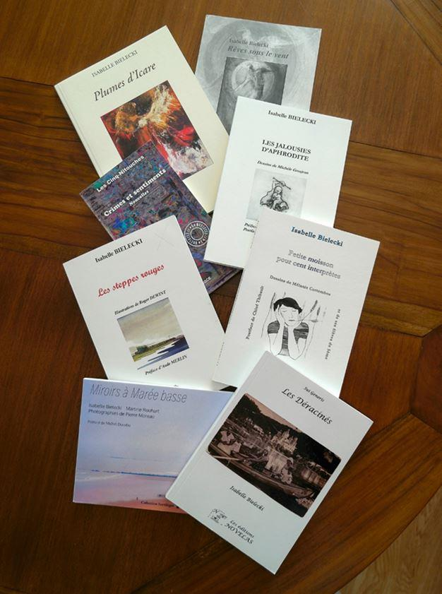

A l’occasion de la sortie, ce 14 février 2021, de mon roman La Maison du Belge, le troisième volet de ma trilogie consacrée à ma saga familiale, Jean Jauniaux, écrivain et chroniqueur culturel et littéraire belge ainsi que président du Pen Club Belgique, écrit ceci sur son blog :
« Nous avions interviewé déjà Isabelle Bielecki au moment de la publication de recueils de poèmes Les jalousies d’Aphrodite, un recueil dont Éric Brogniet, académicien et poète, a magnifiquement analysé la puissance d’évocation « des poèmes maîtrisés, aboutis, évocateurs et célébrant les noces du sensible, du violent et du bel amour ! », paru peu après le premier tome de ce qui est aujourd’hui un triptyque romanesque achevé.
Le Roman Les mots de Russie ouvrait ce cycle autobiographique, dont l’écriture romanesque permettait à l’auteure d’explorer ses origines et de répondre à une promesse ancienne faite au père de la romancière-protagoniste romanesque. Le personnage de cette autofiction, Elisabeth, apparaîtra ensuite dans le deuxième volume du cycle dont le titre Les tulipes du Japon évoque un des jalons de la vie « civile » de l’auteure.
Il restait à écrire la victoire de l’écriture, c’est à dire la réappropriation de l’identité et de la mémoire : c’est chose faite avec La maison du Belge, un roman dont les miroirs multiples reflètent à la fois les protagonistes de ces décennies de combat, mais aussi les lumières dont certains balisent un cheminement créatif d’un courage et d’une obstination hors du commun, l’écriture comme seule voie de salut. Naguère et aujourd’hui.
À lire ce roman, on décèle aussi les différentes écritures auxquelles Isabelle Bielecki s’est depuis toujours consacrée en plus de la fiction romanesque : le théâtre et la poésie. Sans doute y a-t-il dans ces deux genres, le sillage souterrain de la langue originelle, le russe. Peut-être est-ce de là aussi que sont venues les constructions poétiques singulières dont la poète a littéralement créé le genre : les stichous. ».
Cette analyse, fort complète quoique ramassée, donne un aperçu de ma créativité littéraire à ce jour, qui se compose de trois romans, neuf recueils de poésie, plusieurs pièces de théâtre dont trois éditées, une série de nouvelles et divers articles, tous parus en Belgique.
Ma trilogie romanesque, dans l’ordre Les Mots de Russie, Les Tulipes du Japon et La Maison du Belge, du nom des trois cultures qui m’ont marquée, joue un rôle central dans ma créativité car elle reprend les principaux thèmes que j’aborde également en poésie et dans mes pièces de théâtre : le déracinement, la mémoire et la passion.
Concrètement, elle traite de manière circonstanciée de la reconquête de ma mémoire et par là de mon histoire familiale.
En 2007, le roman les mots de Russie a obtenu le prix littéraire des amis des bibliothèque de la Ville Bruxelles. Cet ouvrage a également fait l’objet d’une édition en langue russe à compte d’auteur en 2019.
Le déracinement est un thème qui revient souvent sous ma plume. Dans les romans bien sûr, mais aussi le recueil de trois pièces de théâtre les déracinés auquel il convient d’ajouter le recueil de poésie les steppes rouges dont voici un extrait :
Pourquoi cette importance du déracinement ? Je suis née en Allemagne de l’Est en 1947. Mon père russe, originaire de Rostov-sur-le-Don, sortait des camps de concentration et ma mère polonaise d’une déportation à quatorze ans. Leur destin tragique leur a collé à la peau toute leur vie durant. Surtout à celle de mon père qui a souffert d’une nostalgie dévastatrice pour sa terre natale. Mes études de traductrice et de courtière en assurances auraient dû me permettre de bien m’assimiler dans mon pays d’adoption, la Belgique. Mais fortement marquée par le bagage culturel paternel, je suis restée sur la frontière entre deux mondes. Ma ligne rouge entre l’ici et le là-bas, le concret et l’idéalisé. Une ambivalence qui s’est nettement manifestée dès que je me suis mise à écrire, relativement tard dans ma vie.
Voici un extrait du roman : La Maison du Belge :
« Pour mon anniversaire, Ludo m’invite cinq jours à Moscou. Dès le décollage de l’avion, je ne tiens plus en place. Je m’y vois. La place Rouge de Nathalie, Le Kremlin et ses églises immaculées, les icônes qui n’en finissent pas de pleurer les malheurs de tant de Russes, les bouleaux, les boutiques de matriochkas et, surtout, une nouvelle Russie.
Main dans la main, nous marchons du matin au soir. Je lui raconte tout ce que je vois, comme s’il s’agissait de mon pays. Je suis dans la capitale du pays de mon père, alors que je n’y ai séjourné que deux fois, en voyage d’affaires, et mon père peut-être jamais. Je m’enthousiasme pour tout. Les talons démesurés de filles à la moue hautaine, les vendeurs de canettes tièdes de coca, les écolières aux nattes enrubannées de blanc, la statue de Pouchkine protecteur des manifestants, le mausolée de Lénine, le labyrinthe de la Cathédrale Saint-Basile, le Goum aux prix exagérément occidentaux, la visite en autocar de la ville où je passe plus de temps à tenter de traduire les propos de la guide qu’à écouter. Et même le théâtre Bolchoï, qui donne sa dernière représentation du ballet Gisèle, avant travaux, devant de vieilles intellectuelles aux jupes lustrées jusqu’à la corde.
Entourée de Russes, je me sens chez moi. Le sourire bienveillant de mon généreux donateur, qui accepte tout de l’enfant que je redeviens, y est pour quelque chose. En dépit de mon âge, je promène partout mes yeux humides d’émotion. Sans doute parce que, baignant dans la langue russe, je retrouve ce quelque chose qui m’a unie à mon père jusqu’à mes treize ans, avant la découverte de ma pseudo-folie. Sa main sèche caressant mes cheveux faisait un petit bruit craquant que j’entends encore. »
Il est difficile de séparer le thème du déracinement de celui de la mémoire. C’est la seconde clé pour appréhender mon écriture. La mémoire est omniprésente dans mes trois romans ainsi que dans mon recueil de poésie : le labyrinthe de papier :
Enfin la passion ! Souffrance ou extase ? Quête ou fuite ? Ses abîmes et ses cimes en sont abordés dans le second et le troisième roman, mais aussi dans les deux recueils de poésie que sont Plumes d’Icare et Les jalousies d’Aphrodite. Voici un extrait du premier recueil cité :
En poésie, l’idée m’est venue de créer un genre ludique, une nouvelle forme de poésie brève aux règles simples afin d’ouvrir la poésie à tous. Cette initiative répondait en partie à un conseil de mon père, resté longtemps communiste : écris quelque chose qui soit utile aux gens !
C’est ainsi qu’est né le stichou. Le mot est de mon invention. Il trouve son origine dans le mot russe « stichok » et le qualificatif français « chou ». Cela fait plus de dix ans que j’enseigne le stichou dans de nombreux ateliers d’écriture destinés aux adultes ou dans des écoles. En voici trois exemples :
A titre indicatif, je suis membre des conseils d’administration de l’Association des Écrivains belges, de l’Association Royale des Écrivains et Artistes Wallons et de l’Association Charles Plisnier.
I.B.
BIBLIOGRAPHIE
La Grange, théâtre, Éditions de l’Acanthe, 1998.
Rêves sous le Vent, poésie, Collection du Cercle littéraire, Bruxelles, 2003.
Les mots de Russie, roman, E.M.E., Fernelmont, 2005. Prix des Amis des bibliothèques de la Ville de Bruxelles.
Partager cette page